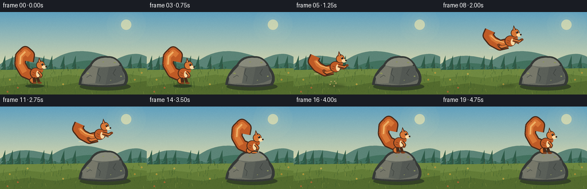
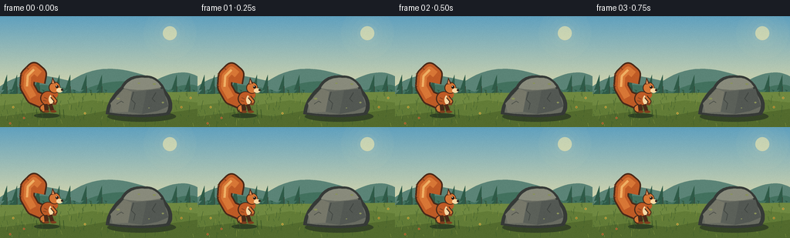

CODING AGENTS AS PIXEL WORLD MODELS
traex/GPT-5.6-Sol · dynamic_spatial_relationship_0025
点击播放 · 原生 RGB 像素
逐轮保存的候选
回放视频、检查图与代码变化。
每份候选均可单独播放。实际图片检查记录在下方工具轨迹中。
候选 01播放与检查图
点击播放 · 原生 RGB 像素


展开代码变化
--- 上一保存版本
+++ 本次保存版本
@@ -0,0 +1,232 @@
+from pathlib import Path
+import math
+import numpy as np
+from PIL import Image, ImageDraw, ImageFilter
+import artifact_io
+
+W, H, N, SS = 256, 144, 20, 4
+SW, SH = W*SS, H*SS
+rng = np.random.default_rng(2501)
+
+def sc(v): return int(round(v*SS))
+def pts(seq): return [(sc(x), sc(y)) for x,y in seq]
+
+def bezier(p0,p1,p2,p3,n=18):
+ out=[]
+ for t in np.linspace(0,1,n):
+ u=1-t
+ out.append((u**3*p0[0]+3*u*u*t*p1[0]+3*u*t*t*p2[0]+t**3*p3[0],
+ u**3*p0[1]+3*u*u*t*p1[1]+3*u*t*t*p2[1]+t**3*p3[1]))
+ return out
+
+def path_poly(segments):
+ out=[]
+ for seg in segments: out += bezier(*seg)
+ return out
+
+def ellipse(d, box, fill, outline=None, width=1):
+ d.ellipse(tuple(sc(v) for v in box), fill=fill, outline=outline, width=sc(width) if outline else 1)
+
+def line(d, xy, fill, width, joint='curve'):
+ d.line(pts(xy), fill=fill, width=sc(width), joint=joint)
+
+def poly(d, xy, fill, outline=None, width=1):
+ d.polygon(pts(xy), fill=fill)
+ if outline: d.line(pts(xy+[xy[0]]), fill=outline, width=sc(width), joint='curve')
+
+# Static hand-painted environment at high resolution.
+def make_background():
+ y = np.arange(SH)[:,None]
+ top=np.array([96,161,191.]); bot=np.array([226,220,171.])
+ q=np.clip(y/(104*SS),0,1)[...,None]
+ arr=np.tile((top*(1-q)+bot*q), (1,SW,1)).astype(np.uint8)
+ im=Image.fromarray(arr,'RGB'); d=ImageDraw.Draw(im)
+ # soft morning sun and atmospheric glow
+ glow=Image.new('RGBA',(SW,SH),(0,0,0,0)); gd=ImageDraw.Draw(glow)
+ for r,a in [(34,7),(27,10),(20,15),(13,25)]: ellipse(gd,(220-r,22-r,220+r,22+r),(255,242,183,a))
+ ellipse(gd,(211,13,229,31),(255,239,173,150))
+ im=Image.alpha_composite(im.convert('RGBA'),glow).convert('RGB'); d=ImageDraw.Draw(im)
+ # far hills
+ hill=path_poly([((0,91),(30,68),(60,77),(91,84)),((91,84),(132,57),(168,70),(204,82)),((204,82),(230,69),(245,72),(256,78))])
+ poly(d,hill+[(256,111),(0,111)],(91,132,119))
+ hill2=path_poly([((0,101),(35,83),(69,88),(103,98)),((103,98),(145,77),(185,83),(218,96)),((218,96),(235,88),(249,87),(256,91))])
+ poly(d,hill2+[(256,113),(0,113)],(66,113,94))
+ # distant conifers
+ for x,h in [(9,25),(22,18),(35,30),(51,20),(77,25),(91,17),(112,29),(132,21),(229,27),(246,20)]:
+ col=(47,91,72)
+ poly(d,[(x,104),(x,76+h*.0),(x-7,96),(x-3,95),(x-10,103),(x+10,103),(x+3,95),(x+7,96)],col)
+ line(d,[(x,91),(x,106)],(55,75,57),1)
+ # meadow base
+ poly(d,[(0,101),(256,98),(256,144),(0,144)],(111,137,65))
+ # layered meadow bands
+ poly(d,[(0,116),(40,111),(78,115),(120,109),(166,115),(210,107),(256,112),(256,144),(0,144)],(98,124,55))
+ poly(d,[(0,130),(51,124),(98,130),(147,121),(199,128),(256,120),(256,144),(0,144)],(83,107,46))
+ # fixed blades, flowers and autumn flecks
+ rr=np.random.default_rng(91)
+ for _ in range(170):
+ x=float(rr.uniform(0,256)); yy=float(rr.uniform(101,144)); h=float(rr.uniform(2,8))
+ c=(63,93,44) if rr.random()<.65 else (125,143,63)
+ line(d,[(x,yy),(x+rr.uniform(-1.8,1.8),yy-h)],c,.45)
+ for x,yy,c in [(17,118,(229,191,65)),(31,132,(218,109,57)),(48,108,(245,211,89)),(235,118,(223,171,58)),(13,139,(217,113,57)),(110,126,(239,200,78)),(247,106,(235,188,70))]:
+ ellipse(d,(x-1.3,yy-1.3,x+1.3,yy+1.3),c)
+ ellipse(d,(x-.45,yy-.45,x+.45,yy+.45),(92,75,40))
+ return im
+
+BG=make_background()
+
+ROCK_OUT=(54,58,55); ROCK=(105,108,98); ROCK_L=(137,139,124); ROCK_D=(75,80,75)
+def draw_rock(im):
+ d=ImageDraw.Draw(im)
+ # contact shadow
+ ellipse(d,(139,123,228,137),(53,68,38))
+ shape=path_poly([((137,127),(138,111),(148,99),(157,91)),((157,91),(164,78),(176,76),(187,77)),((187,77),(200,76),(210,85),(215,97)),((215,97),(225,108),(225,121),(219,128))])
+ shape += bezier((219,128),(192,133),(160,131),(137,127))
+ poly(d,shape,ROCK_OUT)
+ inner=path_poly([((142,125),(143,111),(153,101),(161,93)),((161,93),(168,82),(179,80),(188,81)),((188,81),(199,80),(205,87),(211,99)),((211,99),(219,108),(220,119),(215,125))])
+ inner += bezier((215,125),(189,129),(163,128),(142,125))
+ poly(d,inner,ROCK)
+ # top plane makes destination obvious
+ top=path_poly([((160,93),(166,82),(177,79),(188,80)),((188,80),(198,79),(205,85),(209,92)),((209,92),(195,96),(174,97),(160,93))])
+ poly(d,top,ROCK_L)
+ # facets and cracks
+ poly(d,[(143,113),(161,94),(171,98),(166,124),(146,125)],(119,120,106))
+ poly(d,[(171,98),(190,96),(184,127),(166,124)],(91,96,89))
+ poly(d,[(190,96),(211,94),(218,117),(204,123),(184,127)],(83,88,83))
+ line(d,[(173,98),(170,108),(175,113),(173,121)],(65,70,66),1)
+ line(d,[(202,99),(197,107),(201,111)],(64,69,65),1)
+ line(d,[(151,114),(157,110),(160,112)],(79,83,76),1)
+ # lichen
+ for x,y,r in [(153,107,2.2),(200,88,2.0),(211,112,1.6),(180,87,1.4),(193,119,1.1)]:
+ ellipse(d,(x-r,y-r*.55,x+r,y+r*.55),(137,146,91))
+
+# Squirrel renderer. x,y is the lowest paw point; pose controls squash/limbs/tail.
+def draw_squirrel(im,x,y,pose='stand',phase=0.0,alpha=255):
+ layer=Image.new('RGBA',(SW,SH),(0,0,0,0)); d=ImageDraw.Draw(layer)
+ outline=(74,42,25,alpha); dark=(126,63,30,alpha); fur=(191,91,38,alpha)
+ fur2=(216,119,54,alpha); light=(240,175,100,alpha); cream=(249,218,165,alpha)
+ crouch = pose in ('crouch','land')
+ flight = pose=='flight'
+ bob = math.sin(phase)*.6 if pose=='stand' else 0
+ yy=y+bob
+ # Tail, always behind. Broad curling silhouette built from layered curved strokes.
+ if flight:
+ tail=[(x-5,yy-13),(x-18,yy-10),(x-31,yy-17),(x-39,yy-27),(x-35,yy-36)]
+ line(d,tail,outline,19); line(d,tail,fur,15)
+ line(d,[(x-6,yy-14),(x-19,yy-14),(x-31,yy-21),(x-35,yy-29)],fur2,6)
+ line(d,[(x-11,yy-15),(x-25,yy-19),(x-34,yy-27)],light,2)
+ else:
+ # curled plume points left/up, unmistakable squirrel tail
+ tail=[(x-5,yy-13),(x-19,yy-19),(x-27,yy-33),(x-26,yy-47),(x-18,yy-55),(x-11,yy-49),(x-13,yy-38)]
+ if crouch: tail=[(a,b+5) for a,b in tail]
+ line(d,tail,outline,20); line(d,tail,fur,16)
+ line(d,tail[1:-1],fur2,9)
+ line(d,tail[2:-2],light,3)
+ # little fur tips on outside edge
+ for k in range(2,5):
+ px,py=tail[k]; line(d,[(px-7,py),(px-10,py-3)],dark,1)
+ # rear leg / body placement
+ body_y=yy-(10 if crouch else 15)
+ if flight:
+ # back legs stretched left, front legs reach toward destination
+ line(d,[(x-4,body_y+5),(x-15,body_y+9),(x-20,body_y+5)],outline,6)
+ line(d,[(x-4,body_y+5),(x-15,body_y+8),(x-20,body_y+5)],fur2,3.5)
+ ellipse(d,(x-23,body_y+2,x-17,body_y+7),dark)
+ else:
+ ellipse(d,(x-11,yy-10,x+1,yy+1),outline)
+ ellipse(d,(x-9.5,yy-9,x,yy-.5),fur2)
+ # torso
+ ellipse(d,(x-10,body_y-12,x+10,body_y+7),outline)
+ ellipse(d,(x-8.5,body_y-11,x+9,body_y+6),fur)
+ ellipse(d,(x+1,body_y-7,x+8,body_y+5),cream)
+ # neck
+ ellipse(d,(x+4,body_y-12,x+13,body_y-3),fur)
+ # head and muzzle
+ hx=x+8; hy=body_y-16
+ ellipse(d,(hx-7,hy-8,hx+8,hy+7),outline)
+ ellipse(d,(hx-5.8,hy-7,hx+7.2,hy+6),fur2)
+ # pointed ears
+ poly(d,[(hx-4,hy-5),(hx-2,hy-14),(hx+2,hy-6)],outline)
+ poly(d,[(hx-2.8,hy-6),(hx-1.7,hy-11),(hx+.3,hy-6)],(224,139,84,alpha))
+ # muzzle to right
+ ellipse(d,(hx+3,hy,hx+11,hy+6),cream)
+ ellipse(d,(hx+9,hy+1,hx+11.8,hy+3.7),(49,35,29,alpha))
+ # eye + highlight
+ ellipse(d,(hx+2,hy-3.5,hx+5.7,hy+.3),(39,29,24,alpha))
+ ellipse(d,(hx+2.7,hy-3,hx+3.7,hy-2),(255,249,221,alpha))
+ # arms and paws
+ if flight:
+ line(d,[(x+5,body_y-5),(x+16,body_y-2),(x+20,body_y-5)],outline,5)
+ line(d,[(x+5,body_y-5),(x+16,body_y-2),(x+20,body_y-5)],fur2,2.5)
+ ellipse(d,(x+18,body_y-7,x+23,body_y-3),dark)
+ # second reaching arm
+ line(d,[(x+4,body_y-3),(x+15,body_y+2)],dark,2)
+ else:
+ line(d,[(x+5,body_y-5),(x+10,body_y+1),(x+8,body_y+5)],outline,5)
+ line(d,[(x+5,body_y-5),(x+10,body_y+1),(x+8,body_y+5)],fur2,2.5)
+ ellipse(d,(x+6,body_y+3,x+11,body_y+6),dark)
+ # feet
+ if flight:
+ pass
+ elif crouch:
+ ellipse(d,(x-3,yy-3,x+8,yy+1),outline)
+ ellipse(d,(x-1,yy-2,x+9,yy),fur2)
+ else:
+ line(d,[(x-3,body_y+5),(x-2,yy-1)],outline,5)
+ line(d,[(x+3,body_y+5),(x+6,yy-1)],outline,5)
+ ellipse(d,(x-5,yy-2,x+2,yy+1),dark)
+ ellipse(d,(x+3,yy-2,x+11,yy+1),dark)
+ # a few fur marks
+ line(d,[(x-5,body_y-4),(x-1,body_y-2)],dark,1)
+ line(d,[(x-6,body_y),(x-2,body_y+1)],dark,1)
+ im.alpha_composite(layer)
+
+# Carefully staged positions. First 1 s establishes LEFT relation; last 1.5 s establishes TOP.
+positions=[
+ (62,124,'stand'),(62,124,'stand'),(63,124,'stand'),(64,124,'stand'),
+ (66,124,'crouch'),(73,113,'flight'),(87,96,'flight'),(104,80,'flight'),
+ (122,68,'flight'),(141,61,'flight'),(159,61,'flight'),(174,66,'flight'),
+ (183,73,'flight'),(184,81,'land'),(184,81,'crouch'),(184,81,'stand'),
+ (184,81,'stand'),(184,81,'stand'),(184,81,'stand'),(184,81,'stand')]
+
+def render_frame(i):
+ im=BG.copy().convert('RGBA')
+ d=ImageDraw.Draw(im)
+ x,y,pose=positions[i]
+ # ground/rock cast shadow tracks the jump and helps show depth.
+ if i<=4:
+ ellipse(d,(x-18,126,x+15,132),(48,65,35,95))
+ elif i<13:
+ # soft shadow stays on meadow and tightens as animal descends
+ sx=62+(184-62)*(i-4)/9
+ shadow=Image.new('RGBA',(SW,SH),(0,0,0,0)); sd=ImageDraw.Draw(shadow)
+ ellipse(sd,(sx-14,126,sx+14,131),(39,52,31,70))
+ shadow=shadow.filter(ImageFilter.GaussianBlur(sc(2))); im.alpha_composite(shadow)
+ draw_rock(im)
+ d=ImageDraw.Draw(im)
+ # airborne speed accents and launch/landing dust
+ if 5<=i<=11:
+ fade=max(0,150-abs(i-8)*20)
+ for k in range(3):
+ yy=y-17+k*6
+ line(d,[(x-31-k*3,yy),(x-24-k*3,yy)],(240,221,170,fade),.8)
+ if i in (4,5):
+ for k in range(5):
+ a=k*1.2; px=70+math.cos(a)*(4+k); py=124-math.sin(a)*(3+k*.5)
+ ellipse(d,(px-1,py-1,px+1,py+1),(191,166,103,180))
+ if i in (13,14):
+ for k in range(4):
+ px=174+k*7; py=82-abs(1.5-k)*2
+ ellipse(d,(px-1,py-1,px+1,py+1),(188,184,151,150))
+ draw_squirrel(im,x,y,pose,phase=i*.75)
+ # foreground grass strands overlap feet on meadow only
+ if i<5:
+ d=ImageDraw.Draw(im)
+ for gx in [48,55,78,83]: line(d,[(gx,132),(gx-1,121)],(52,82,37,255),.7)
+ # subtle coherent paper grain (same pattern each frame)
+ frame=np.asarray(im.convert('RGB').resize((W,H),Image.Resampling.LANCZOS)).astype(np.int16)
+ grain=np.random.default_rng(777).normal(0,0.9,(H,W,1))
+ frame=np.clip(frame+grain,0,255).astype(np.uint8)
+ return frame
+
+frames=np.stack([render_frame(i) for i in range(N)],axis=0)
+artifact_io.save(frames,Path(__file__).resolve().parent)
可观测工具轨迹
实际执行的命令与返回图片。
命令 1exit 0
/bin/bash -lc "cat GENERATION_RULES.md && printf '\\n---PROMPT---\\n' && cat prompt.txt && printf '\\n---SPEC---\\n' && cat task_spec.json"
命令 2exit 1
/bin/bash -lc "find . -maxdepth 2 -type f -printf '%p\\n' | sort | head -200 && printf '\\n--- tools ---\\n' && command -v ffmpeg && command -v python3 && python3 - <<'PY' mods=['PIL','numpy','cv2','cairo'] for m in mods: try: x=__import__(m); print(m,'ok',getattr(x,'__version__','')) except Exception as e: print(m,'NO',e) PY"
命令 3exit 0
/bin/bash -lc 'cat artifact_io.py'
命令 4exit 0
/bin/bash -lc 'set +e; for x in python python3 ffmpeg convert; do printf "$x "; command -v "$x"; done; python3 - <<'"'PY' mods=['PIL','numpy','cv2','cairo','imageio'] for m in mods: try: x=__import__(m); print(m,'ok',getattr(x,'__version__','')) except Exception as e: print(m,'NO',e) PY"
命令 5exit 0
/bin/bash -lc "cat > generate.py <<'PY'
from pathlib import Path
import math
import numpy as np
from PIL import Image, ImageDraw, ImageFilter
import artifact_io
W, H, N, SS = 256, 144, 20, 4
SW, SH = W*SS, H*SS
rng = np.random.default_rng(2501)
def sc(v): return int(round(v*SS))
def pts(seq): return [(sc(x), sc(y)) for x,y in seq]
def bezier(p0,p1,p2,p3,n=18):
out=[]
for t in np.linspace(0,1,n):
u=1-t
out.append((u**3*p0[0]+3*u*u*t*p1[0]+3*u*t*t*p2[0]+t**3*p3[0],
u**3*p0[1]+3*u*u*t*p1[1]+3*u*t*t*p2[1]+t**3*p3[1]))
return out
def path_poly(segments):
out=[]
for seg in segments: out += bezier(*seg)
return out
def ellipse(d, box, fill, outline=None, width=1):
d.ellipse(tuple(sc(v) for v in box), fill=fill, outline=outline, width=sc(width) if outline else 1)
def line(d, xy, fill, width, joint='curve'):
d.line(pts(xy), fill=fill, width=sc(width), joint=joint)
def poly(d, xy, fill, outline=None, width=1):
d.polygon(pts(xy), fill=fill)
if outline: d.line(pts(xy+[xy[0]]), fill=outline, width=sc(width), joint='curve')
# Static hand-painted environment at high resolution.
def make_background():
y = np.arange(SH)[:,None]
top=np.array([96,161,191.]); bot=np.array([226,220,171.])
q=np.clip(y/(104*SS),0,1)[...,None]
arr=np.tile((top*(1-q)+bot*q), (1,SW,1)).astype(np.uint8)
im=Image.fromarray(arr,'RGB'); d=ImageDraw.Draw(im)
# soft morning sun and atmospheric glow
glow=Image.new('RGBA',(SW,SH),(0,0,0,0)); gd=ImageDraw.Draw(glow)
for r,a in [(34,7),(27,10),(20,15),(13,25)]: ellipse(gd,(220-r,22-r,220+r,22+r),(255,242,183,a))
ellipse(gd,(211,13,229,31),(255,239,173,150))
im=Image.alpha_composite(im.convert('RGBA'),glow).convert('RGB'); d=ImageDraw.Draw(im)
# far hills
hill=path_poly([((0,91),(30,68),(60,77),(91,84)),((91,84),(132,57),(168,70),(204,82)),((204,82),(230,69),(245,72),(256,78))])
poly(d,hill+[(256,111),(0,111)],(91,132,119))
hill2=path_poly([((0,101),(35,83),(69,88),(103,98)),((103,98),(145,77),(185,83),(218,96)),((218,96),(235,88),(249,87),(256,91))])
poly(d,hill2+[(256,113),(0,113)],(66,113,94))
# distant conifers
for x,h in [(9,25),(22,18),(35,30),(51,20),(77,25),(91,17),(112,29),(132,21),(229,27),(246,20)]:
col=(47,91,72)
poly(d,[(x,104),(x,76+h*.0),(x-7,96),(x-3,95),(x-10,103),(x+10,103),(x+3,95),(x+7,96)],col)
line(d,[(x,91),(x,106)],(55,75,57),1)
# meadow base
poly(d,[(0,101),(256,98),(256,144),(0,144)],(111,137,65))
# layered meadow bands
poly(d,[(0,116),(40,111),(78,115),(120,109),(166,115),(210,107),(256,112),(256,144),(0,144)],(98,124,55))
poly(d,[(0,130),(51,124),(98,130),(147,121),(199,128),(256,120),(256,144),(0,144)],(83,107,46))
# fixed blades, flowers and autumn flecks
rr=np.random.default_rng(91)
for _ in range(170):
x=float(rr.uniform(0,256)); yy=float(rr.uniform(101,144)); h=float(rr.uniform(2,8))
c=(63,93,44) if rr.random()<.65 else (125,143,63)
line(d,[(x,yy),(x+rr.uniform(-1.8,1.8),yy-h)],c,.45)
for x,yy,c in [(17,118,(229,191,65)),(31,132,(218,109,57)),(48,108,(245,211,89)),(235,118,(223,171,58)),(13,139,(217,113,57)),(110,126,(239,200,78)),(247,106,(235,188,70))]:
ellipse(d,(x-1.3,yy-1.3,x+1.3,yy+1.3),c)
ellipse(d,(x-.45,yy-.45,x+.45,yy+.45),(92,75,40))
return im
BG=make_background()
ROCK_OUT=(54,58,55); ROCK=(105,108,98); ROCK_L=(137,139,124); ROCK_D=(75,80,75)
def draw_rock(im):
d=ImageDraw.Draw(im)
# contact shadow
ellipse(d,(139,123,228,137),(53,68,38))
shape=path_poly([((137,127),(138,111),(148,99),(157,91)),((157,91),(164,78),(176,76),(187,77)),((187,77),(200,76),(210,85),(215,97)),((215,97),(225,108),(225,121),(219,128))])
shape += bezier((219,128),(192,133),(160,131),(137,127))
poly(d,shape,ROCK_OUT)
inner=path_poly([((142,125),(143,111),(153,101),(161,93)),((161,93),(168,82),(179,80),(188,81)),((188,81),(199,80),(205,87),(211,99)),((211,99),(219,108),(220,119),(215,125))])
inner += bezier((215,125),(189,129),(163,128),(142,125))
poly(d,inner,ROCK)
# top plane makes destination obvious
top=path_poly([((160,93),(166,82),(177,79),(188,80)),((188,80),(198,79),(205,85),(209,92)),((209,92),(195,96),(174,97),(160,93))])
poly(d,top,ROCK_L)
# facets and cracks
poly(d,[(143,113),(161,94),(171,98),(166,124),(146,125)],(119,120,106))
poly(d,[(171,98),(190,96),(184,127),(166,124)],(91,96,89))
poly(d,[(190,96),(211,94),(218,117),(204,123),(184,127)],(83,88,83))
line(d,[(173,98),(170,108),(175,113),(173,121)],(65,70,66),1)
line(d,[(202,99),(197,107),(201,111)],(64,69,65),1)
line(d,[(151,114),(157,110),(160,112)],(79,83,76),1)
# lichen
for x,y,r in [(153,107,2.2),(200,88,2.0),(211,112,1.6),(180,87,1.4),(193,119,1.1)]:
ellipse(d,(x-r,y-r*.55,x+r,y+r*.55),(137,146,91))
# Squirrel renderer. x,y is the lowest paw point; pose controls squash/limbs/tail.
def draw_squirrel(im,x,y,pose='stand',phase=0.0,alpha=255):
layer=Image.new('RGBA',(SW,SH),(0,0,0,0)); d=ImageDraw.Draw(layer)
outline=(74,42,25,alpha); dark=(126,63,30,alpha); fur=(191,91,38,alpha)
fur2=(216,119,54,alpha); light=(240,175,100,alpha); cream=(249,218,165,alpha)
crouch = pose in ('crouch','land')
flight = pose=='flight'
bob = math.sin(phase)*.6 if pose=='stand' else 0
yy=y+bob
# Tail, always behind. Broad curling silhouette built from layered curved strokes.
if flight:
tail=[(x-5,yy-13),(x-18,yy-10),(x-31,yy-17),(x-39,yy-27),(x-35,yy-36)]
line(d,tail,outline,19); line(d,tail,fur,15)
line(d,[(x-6,yy-14),(x-19,yy-14),(x-31,yy-21),(x-35,yy-29)],fur2,6)
line(d,[(x-11,yy-15),(x-25,yy-19),(x-34,yy-27)],light,2)
else:
# curled plume points left/up, unmistakable squirrel tail
tail=[(x-5,yy-13),(x-19,yy-19),(x-27,yy-33),(x-26,yy-47),(x-18,yy-55),(x-11,yy-49),(x-13,yy-38)]
if crouch: tail=[(a,b+5) for a,b in tail]
line(d,tail,outline,20); line(d,tail,fur,16)
line(d,tail[1:-1],fur2,9)
line(d,tail[2:-2],light,3)
# little fur tips on outside edge
for k in range(2,5):
px,py=tail[k]; line(d,[(px-7,py),(px-10,py-3)],dark,1)
# rear leg / body placement
body_y=yy-(10 if crouch else 15)
if flight:
# back legs stretched left, front legs reach toward destination
line(d,[(x-4,body_y+5),(x-15,body_y+9),(x-20,body_y+5)],outline,6)
line(d,[(x-4,body_y+5),(x-15,body_y+8),(x-20,body_y+5)],fur2,3.5)
ellipse(d,(x-23,body_y+2,x-17,body_y+7),dark)
else:
ellipse(d,(x-11,yy-10,x+1,yy+1),outline)
ellipse(d,(x-9.5,yy-9,x,yy-.5),fur2)
# torso
ellipse(d,(x-10,body_y-12,x+10,body_y+7),outline)
ellipse(d,(x-8.5,body_y-11,x+9,body_y+6),fur)
ellipse(d,(x+1,body_y-7,x+8,body_y+5),cream)
# neck
ellipse(d,(x+4,body_y-12,x+13,body_y-3),fur)
# head and muzzle
hx=x+8; hy=body_y-16
ellipse(d,(hx-7,hy-8,hx+8,hy+7),outline)
ellipse(d,(hx-5.8,hy-7,hx+7.2,hy+6),fur2)
# pointed ears
poly(d,[(hx-4,hy-5),(hx-2,hy-14),(hx+2,hy-6)],outline)
poly(d,[(hx-2.8,hy-6),(hx-1.7,hy-11),(hx+.3,hy-6)],(224,139,84,alpha))
# muzzle to right
ellipse(d,(hx+3,hy,hx+11,hy+6),cream)
ellipse(d,(hx+9,hy+1,hx+11.8,hy+3.7),(49,35,29,alpha))
# eye + highlight
ellipse(d,(hx+2,hy-3.5,hx+5.7,hy+.3),(39,29,24,alpha))
ellipse(d,(hx+2.7,hy-3,hx+3.7,hy-2),(255,249,221,alpha))
# arms and paws
if flight:
line(d,[(x+5,body_y-5),(x+16,body_y-2),(x+20,body_y-5)],outline,5)
line(d,[(x+5,body_y-5),(x+16,body_y-2),(x+20,body_y-5)],fur2,2.5)
ellipse(d,(x+18,body_y-7,x+23,body_y-3),dark)
# second reaching arm
line(d,[(x+4,body_y-3),(x+15,body_y+2)],dark,2)
else:
line(d,[(x+5,body_y-5),(x+10,body_y+1),(x+8,body_y+5)],outline,5)
line(d,[(x+5,body_y-5),(x+10,body_y+1),(x+8,body_y+5)],fur2,2.5)
ellipse(d,(x+6,body_y+3,x+11,body_y+6),dark)
# feet
if flight:
pass
elif crouch:
ellipse(d,(x-3,yy-3,x+8,yy+1),outline)
ellipse(d,(x-1,yy-2,x+9,yy),fur2)
else:
line(d,[(x-3,body_y+5),(x-2,yy-1)],outline,5)
line(d,[(x+3,body_y+5),(x+6,yy-1)],outline,5)
ellipse(d,(x-5,yy-2,x+2,yy+1),dark)
ellipse(d,(x+3,yy-2,x+11,yy+1),dark)
# a few fur marks
line(d,[(x-5,body_y-4),(x-1,body_y-2)],dark,1)
line(d,[(x-6,body_y),(x-2,body_y+1)],dark,1)
im.alpha_composite(layer)
# Carefully staged positions. First 1 s establishes LEFT relation; last 1.5 s establishes TOP.
positions=[
(62,124,'stand'),(62,124,'stand'),(63,124,'stand'),(64,124,'stand'),
(66,124,'crouch'),(73,113,'flight'),(87,96,'flight'),(104,80,'flight'),
(122,68,'flight'),(141,61,'flight'),(159,61,'flight'),(174,66,'flight'),
(183,73,'flight'),(184,81,'land'),(184,81,'crouch'),(184,81,'stand'),
(184,81,'stand'),(184,81,'stand'),(184,81,'stand'),(184,81,'stand')]
def render_frame(i):
im=BG.copy().convert('RGBA')
d=ImageDraw.Draw(im)
x,y,pose=positions[i]
# ground/rock cast shadow tracks the jump and helps show depth.
if i<=4:
ellipse(d,(x-18,126,x+15,132),(48,65,35,95))
elif i<13:
# soft shadow stays on meadow and tightens as animal descends
sx=62+(184-62)*(i-4)/9
shadow=Image.new('RGBA',(SW,SH),(0,0,0,0)); sd=ImageDraw.Draw(shadow)
ellipse(sd,(sx-14,126,sx+14,131),(39,52,31,70))
shadow=shadow.filter(ImageFilter.GaussianBlur(sc(2))); im.alpha_composite(shadow)
draw_rock(im)
d=ImageDraw.Draw(im)
# airborne speed accents and launch/landing dust
if 5<=i<=11:
fade=max(0,150-abs(i-8)*20)
for k in range(3):
yy=y-17+k*6
line(d,[(x-31-k*3,yy),(x-24-k*3,yy)],(240,221,170,fade),.8)
if i in (4,5):
for k in range(5):
a=k*1.2; px=70+math.cos(a)*(4+k); py=124-math.sin(a)*(3+k*.5)
ellipse(d,(px-1,py-1,px+1,py+1),(191,166,103,180))
if i in (13,14):
for k in range(4):
px=174+k*7; py=82-abs(1.5-k)*2
ellipse(d,(px-1,py-1,px+1,py+1),(188,184,151,150))
draw_squirrel(im,x,y,pose,phase=i*.75)
# foreground grass strands overlap feet on meadow only
if i<5:
d=ImageDraw.Draw(im)
for gx in [48,55,78,83]: line(d,[(gx,132),(gx-1,121)],(52,82,37,255),.7)
# subtle coherent paper grain (same pattern each frame)
frame=np.asarray(im.convert('RGB').resize((W,H),Image.Resampling.LANCZOS)).astype(np.int16)
grain=np.random.default_rng(777).normal(0,0.9,(H,W,1))
frame=np.clip(frame+grain,0,255).astype(np.uint8)
return frame
frames=np.stack([render_frame(i) for i in range(N)],axis=0)
artifact_io.save(frames,Path(__file__).resolve().parent)
PY
python3 generate.py
python3 - <<'PY'
import numpy as np
from PIL import Image
z=np.load('pixels.npz')['pixels']
print('pixels',z.shape,z.dtype,'frames on disk',len(list(__import__('pathlib').Path('frames').glob('*.png'))))
print('inspection',Image.open('inspection.png').size)
PY"命令 6exit 0
/bin/bash -lc "python3 - <<'PY'
from pathlib import Path
from PIL import Image
import numpy as np, hashlib
imgs=[]
for p in sorted(Path('frames').glob('*.png')):
a=np.asarray(Image.open(p))
assert a.shape==(144,256,3) and a.dtype==np.uint8
imgs.append(a)
A=np.stack(imgs)
print('validated',A.shape,A.dtype)
print('mean consecutive MAE:',np.abs(A[1:].astype(int)-A[:-1].astype(int)).mean(axis=(1,2,3)).round(3).tolist())
print('first/final RGB sha256:',hashlib.sha256(A[0].tobytes()).hexdigest()[:16],hashlib.sha256(A[-1].tobytes()).hexdigest()[:16])
print('artifacts:',[(p.name,p.stat().st_size) for p in [Path('pixels.npz'),Path('index.html'),Path('inspection.png'),Path('transition_check.png')]])
PY"保存候选 1 份；完成命令 6 次；可验证图片返回 0 张。原始 API 响应与完整日志保留在本地。